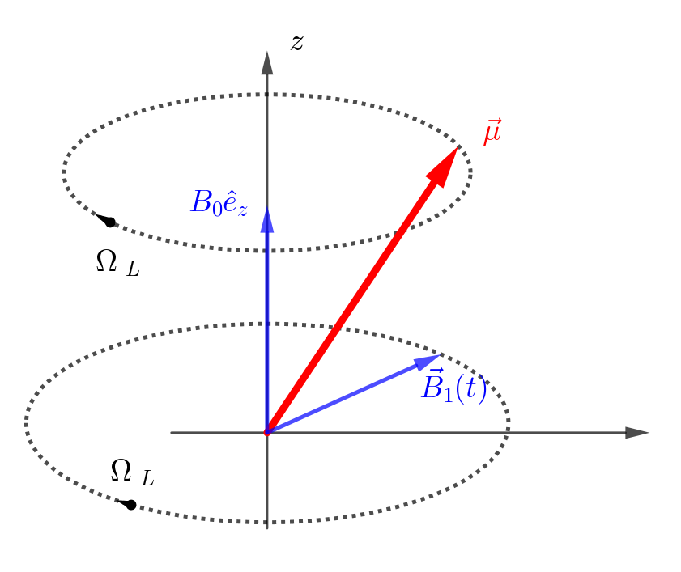

Atomic and Optical Physics I, 03 ResonanceIII: Rapid adiabatic passage
Table of Contents
1. Information
2. Atomic clocks
3. Motion in a rotating magnetic field, Resonance, \(\pi\) pulse
考虑 classical 的情况.
假设磁矩 \(\vec{\mu}\) 处于磁场中磁场为
\begin{align} \vec{B}(t) = B_0 \hat{e}_z + B_1(\hat{e}_x \cos \Omega_Lt - \hat{e}_y \sin\Omega_Lt) \end{align}也就是说在 \(z\) 方向有一个 static field, 在 \(xoy\) 平面内有一个以 Lamor 频率 \(\Omega_L = -\gamma B_0\) 旋转的 rotating field. 在 rotating frame ( \(x', y', z\) ) 中, 根据上一节的知识, 等效的磁场为
\begin{align} B_{\mathrm{eff}} = (B_0 + \frac{\Omega_L}{\gamma})\hat{e}_z + B_1\hat{e}_x = B_1\hat{e}_{x'} \end{align}也就是说 \(z\) 方向的 static field 被抵消, 只剩下 \(x'\) 方向的一个 static field. 因 此, \(\vec{\mu}\) 会绕 \(x'\) 轴以 Rabi 频率 \(\omega_R = - \gamma B_{1}\) 进动. 因此总的效果是会 将 spin flip 一下. 比如
\begin{align} t =& 0, \quad\vec{\mu} = \mu \hat{e}_z \\ t =& \frac{\pi}{\omega_R}, \quad\vec{\mu} = \mu \hat{e}_z \end{align}也叫 \(\pi\) pulse.

如果磁场不是 rotating 的, 比如是沿某个方向线偏振的, 那么可以分解成两个方向相反的 rotating 的叠加. 在 rotating frame 中, 一个方向的 rotating 会变成 static, 而另一 个方向上的 rotating 会变成原来频率的 2 倍 rotating, 这个高频的 rotating 通常不会 有物理效果, 所以被忽略, 这就是 rotating wave approximation!
4. Generalized Rabi Frequency
如果 \(B_{1}\) rotating 的 frequency \(\omega \neq \Omega_L\) , 那么等效的磁场就不会完全抵消 \(B_0\) , 那么
\begin{align} \vec{B}_{\mathrm{eff}} = B_1 \hat{e}_{x'} + \left(B_0 - \frac{\omega}{\gamma} \right) \hat{e}_z \end{align}其大小为
\begin{align} |B_{\mathrm{eff}}| = \sqrt{B_1^2 + (B_0 - \frac{\omega}{\gamma})^2} \end{align}可以定义 generalized Rabi frequency (之后都取 \(\gamma = |\gamma|\) ?)
\begin{align} \Omega_{R} = \gamma B_{\mathrm{eff}} = \sqrt{(\omega_L - \omega)^2 + \omega_R^2} = \sqrt{\omega_R^2 + \delta^2} \end{align}其中 detuning \(\delta = \omega_L - \omega\)
5. Compare with quantum result
如图, 对两个三角形用余弦定理
\begin{align} A^2 =& 2 \mu^2 (1 - \cos\alpha) \\ A^2 =& 2 \mu^{2} \sin^2\theta (1 - \cos\phi) \end{align}并利用
\begin{align} \sin \theta =& \frac{B_1}{B_{\mathrm{eff}}} = \frac{\omega_R}{\Omega_R} \\ \phi(t) =& \Omega_R t \end{align}可以严格地求得 \(\mu\) 在 \(z\) 方向上的投影
\begin{align} \mu_z(t) = \mu\sin\cos\alpha = \mu \left[ 1 - 2 \frac{\omega_R^2}{\Omega_{R}^2}\sin^{2} \left( \frac{\Omega_R}{2}t \right) \right] \end{align}
如果我们定义
\begin{align} P_{\uparrow \to \downarrow} \equiv \frac{\mu_z(0) - \mu_z(t)}{2 \mu_z(0)} \end{align}那么
\begin{align} P_{\uparrow \to \downarrow} = \frac{\omega_R^2}{\Omega_{R}^2}\sin^{2} \left( \frac{\Omega_R}{2}t \right) \end{align}这正是量子的结果.
6. Rapid adiabatic passage (RAP) (classical counterpart of Landau-Zener transition)
现在 change the frequency of the rotating field. Sweeping the frequency thtrough the resoance, we can invert the spin, we can tun over the magnetic moment in a very robust way.
- slow: compare to the Larmor frequency
- rapid: compare to all the things mentioned here(decoherence and relaxition processes).
这里不做严格计算, 只给一个 intuitive picture
\(\vec{\mu}\) , static field \(\vec{B}_0\) , \(\vec{B}_1\) rotating at \(\omega\) , \(|B_{1}| \ll |B_0|\) , start with \(\omega << \gamma B_{0}\)

In adiabatic limit, the spin processes tightly ( \(\theta\) is small) around \(\vec{B}_{\mathrm{eff}}\) , follows the direction of the effective magnetic field.
所以当扫到 detuning \(\delta = 0\) 时, \(\vec{\mu}\) 转到了 \(x'\) 方向, 当继续扫到 \(\omega \gg \gamma B_0\) 时, spin 被 flip.
无论是从高频向低频扫, 还是从低频向高频扫, 只要扫过共振频率, the rapid adiabatic passage always swaps the spin state.
这在实验上很有用, 因为像之前那样直接加到共振频率上, 如果频率稍有偏差, spin 就不 会完全被 flip. 但是 RAP 的话, 只要扫过共振频率, spin 就会被完美地 flip!
同样的物理机制, 但是操作完全不一样, 就是让 spin 在 quadrapolar fields magnetic trap 中同移动, 磁场也能从一个方向扫到相反的方向. 在中间可能发生 Majorana losses.